Brief
現今社會在忙碌及充滿壓力的生活下，為了讓身心靈放鬆及放慢自身腳步，會透過很多種方式達成。其中有那麼一群人透過禪修唸佛來舒壓，並且從中得到一些寄託及累積功德。
當他們在唸誦佛經時，由一隻手轉動念珠，另一隻手透過計數器，或是手寫正字號來輔助計次，但時常感到手忙腳亂無法專心修佛，有時還會忘記數到幾次，或是忘記已經唸誦了多久，而導致修佛者無法專心累積功德，更別說是得到放鬆及舒壓的感受。
因此，我們想讓擁有冥想/數珠念佛習慣的族群，可以擁有方便的計數器及APP產品輔助做紀錄，就此展開智能佛珠穿戴產品的研究分析及產品設計。
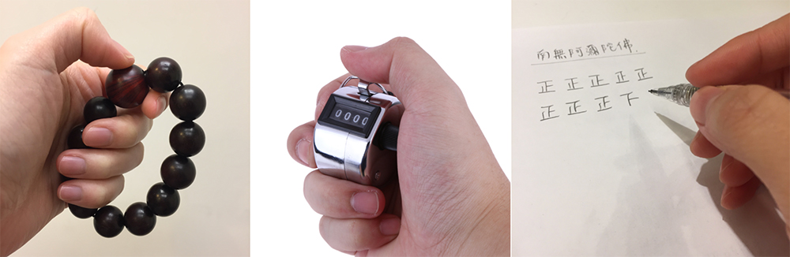Target
為了讓此族群可以擁有一個好的轉珠念佛及冥想體驗，我們可以從以下幾點問題來探討：
Role
帶領ID同仁執行前期研究，包含人物誌討論、易用性測試及訪談、資訊架構分析，並執行APP UI/UX 產品設計規劃及整合等等研究分析
Pain Point
產品商業模式的期盼
我們希望可以打造一個智能佛珠產品，透過英業達的設計研發及強力代工，加上寺廟及住持的代言加持，讓修佛族群可以有一個很好的線上交流平台，達到不受空間及時間限制的修佛無國界體驗。此外，可以持續發展其他商業供應鏈，像是與商品供應商配合廣告與銷售，跟電信商合作執行法會活動直播等等。
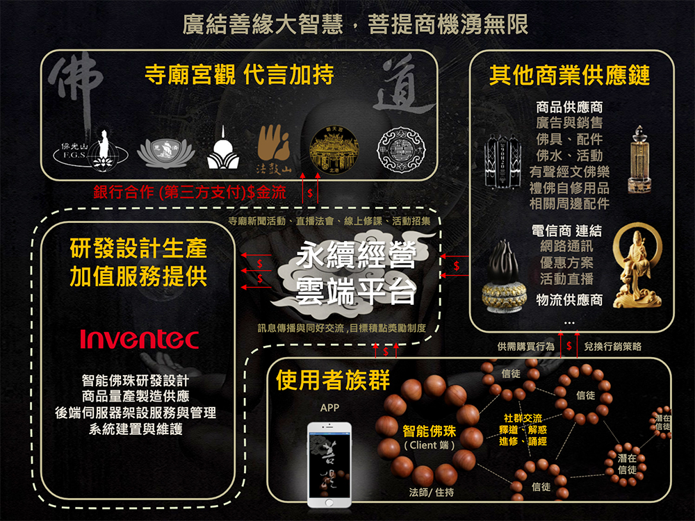面臨的挑戰
首先，因為對我們來說這是一個從前未接觸過的領域，一開始需要花很多時間蒐集資料，並且透過訪談來了解此修佛族群的想法，傾聽他們的聲音，並且站在他們的角度同理心情及感受。慢慢的越來越了解他們的想法，並從中挖掘可能的產品走向及發展。此外，台灣寺廟對於這樣的科技產品接受度並沒有這麼高，所以通常會要求高額的價格才願意合作及鋪貨。
常見的修佛者類型
因此，我們開始建立人物誌，從年齡/職業/個性/修佛目的/修佛頻率為依據，分成三種類型來探討：
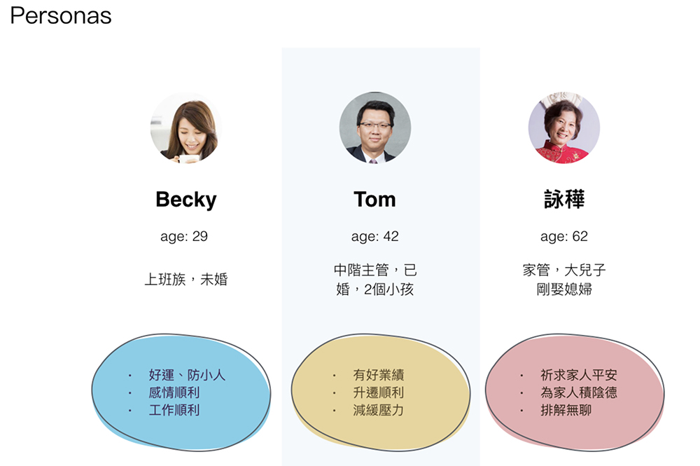修佛者普遍遇到的問題
條列用戶痛點
- 需兩隻手並用才能完成進修念佛
- 紀錄只能一次性難以追朔
- 活動平日晚上居多無法掌握時間一同參與
- 平時很難認識志同道合的修佛者
- 須自行尋找適合的背景音樂
- 佛珠主珠跟子珠需有觸感上的差異
市場現況與競品分析
在台灣並沒有太多這樣的產品，反而是中國大陸有一堆相關產品，因此我們從淘寶上買回來做測試。我們發現在演算法上面，以顆為單位的方式計次，反而錯誤率更高。因此我們採取以一圈的方式計次，可以更精確的幫助用戶紀錄次數，並且達到專注在修佛的使用體驗上。
我們的詮釋
我們透過演算法及APP架構/流程設計解決用戶痛點並滿足需求，如下：
- 如何在轉珠念佛時，只需要專心唸佛，不需要擔心唸到第幾遍。
- 如何在轉珠念佛時，只需要專心唸佛，不需要擔心唸到第幾遍。
- 如何提升修佛者轉珠念佛的意志及樂趣，並且增加成就感。
- 如何在不同空間及時間也能與他人一起完成共修。
- 如何增加修佛者的共通參與感，並且快速找到同好一起參與活動。
- 如何提高修佛者者之間的互動性，並將修佛一事發揚光大。
Solution: 智能數據紀錄/智能機制提醒
不使用傳統計數器輔助，而改採加入「演算法」的方式，將智能佛珠與App裝置做連接。
當轉珠念佛時，只需注意力集中在念佛及轉動念珠上，App裝置上會顯示所唸次數，不需擔心忘記唸了幾遍。
若希望App裝置提醒您是否修課完成，可以在轉珠念佛前做「達成方式」及「提醒機制」的設定。另外，除了累積自己的功德之外，也可以透過「迴向對象」的設定，累積功德給他人。
Solution: 雲端數據儲存/可回朔讀取
傳統計數器只能記一次性的數據，因此流程設計上採用「雲端儲存空間」，將舊有的數據及資料永久保存，並透過App裝置追蹤以往修課紀錄，讓修佛者可加以比對，達到修課紀錄「數據化」及「可回朔」的效果。
Solution: 達成目標獎勵機制
為了讓修佛者除了可以看紀錄之外，還可以透過設定「目標機制」及「獎勵機制」的友善設計，使得修佛者產生成就感。我們採用「功德蓮花的綻放機制」，當修課時間小於20%時，呈現第一階段「花苞」;當修課時間大於等於20%，小於75%時，呈現第二階段「半開」;當修課時間大於75%時，呈現第三階段「全開」。藉由蓮花綻放的機制，讓修佛者得到一種「功德圓滿」的感受。
Solution: 線上遠距共修/即時追蹤群體活動進度
為達成較為彈性化的共修，本設計主要在App裝置上採用「線上參與活動」的方式，讓修佛者可以在不同空間及時間進行轉珠念佛。即使是同時間有多人一起進行，也可以透過雲端「即時數據加總」的方式，讓修佛者可以立即得知目前總數據。
再者，為求讓修佛者隨時掌握距離共修目標還有多遠距離，所以在App裝置上採取「即時追蹤進度」的友善體驗設計，讓共修活動更快達成及實現。
Solution: 建立及自訂活動/邀請他人共修/增加黏著度
為了讓修佛者更有參與感，在設計上讓任何擁有智能佛珠與App裝置的使用者都可以「自訂及建立活動」，並且邀請一樣熱愛修佛的人一同共修。辦活動不再只是師父們才能做的事情，信徒們也可自行辦活動共修及訂定目標，還可以邀請身邊親朋好友一同參與累積功德，進而「增加修佛的黏著度」。
Solution: 即時留言交流/成果分享/討論度提升
由於共修活動採以線上活動的方式進行，因此為求讓修佛者有更多的互動性，在App裝置上加入「即時留言交流」的友善體驗設計，讓修佛者一同完成共修活動時，也可以互相加油打氣及鼓勵，促使共修活動的 達成率提高。
此外，達成共修活動目標後，以「社群分享」的方式讓修佛一事廣為人知，不僅增加修佛者的成就感，還可以間接的提升討論度。
然而，在智能佛珠的載體設計上我們著重在配戴上的用戶體驗(如何佩戴/如何拿下)，以及數珠握持上的舒適度(串珠大小/材質)，甚至是佛珠的氣味調配，讓用戶得以感受到真正的身心靈放鬆。
此外，我們考量到用戶在修佛時需要聽背景音樂，所以搭配充電座「缽」來販售，可以當作是一個喇叭，也可以是一個小夜燈，發展成多用途產品。除了佛珠之外，還可以多一個配件。因此在充電的設計及技術我們也花很多時間去研究，以磁吸方式充電，讓用戶可以隨手放上充電器就準確充到電，且沒有方向性問題，讓充電變成一件很方便的事。以及在充電燈號方面的定義，如何讓用戶知道是否有在充電/是否已完成充電等，很多細節的設計都是為了成就好的用戶體驗。
Highlight
將前述研究的結果，帶入產品設計裡，包含軟體介面及硬體設計，以下切成兩塊來看：
軟體：著重在整個用戶體驗架構
APP整體架構：Flow chart流程圖
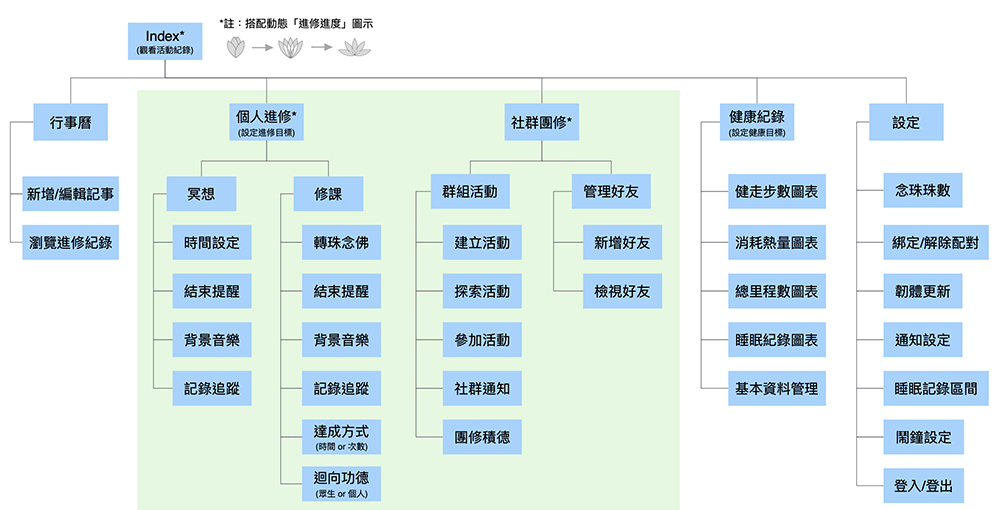APP介面呈現：Wireframe 功能流程圖/Mockup介面配色及圖示設計
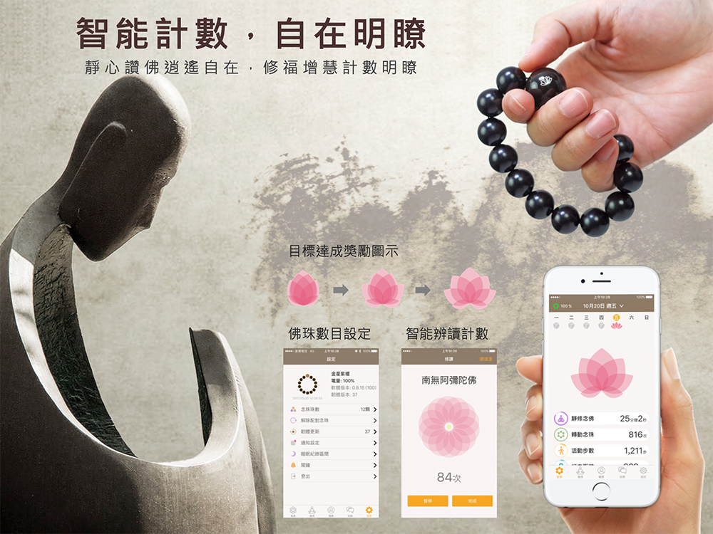 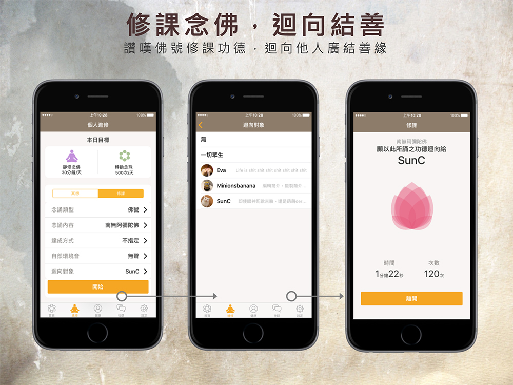 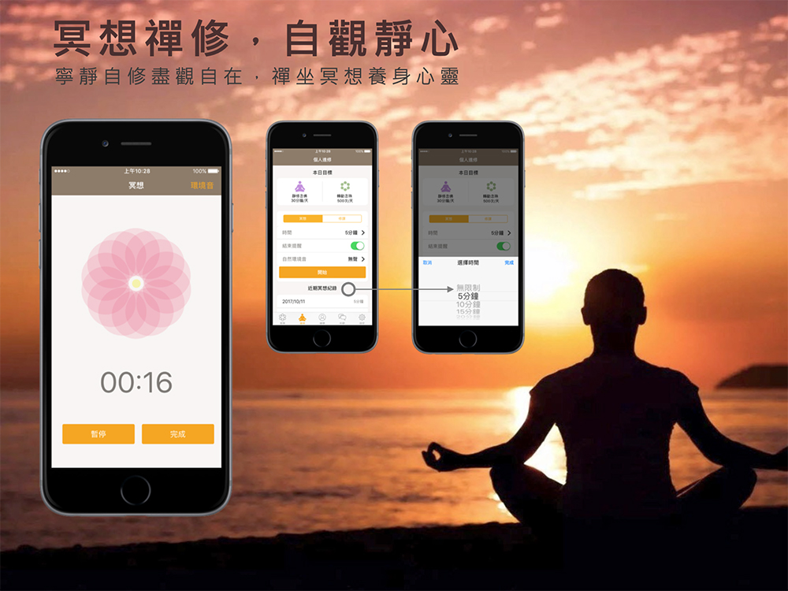 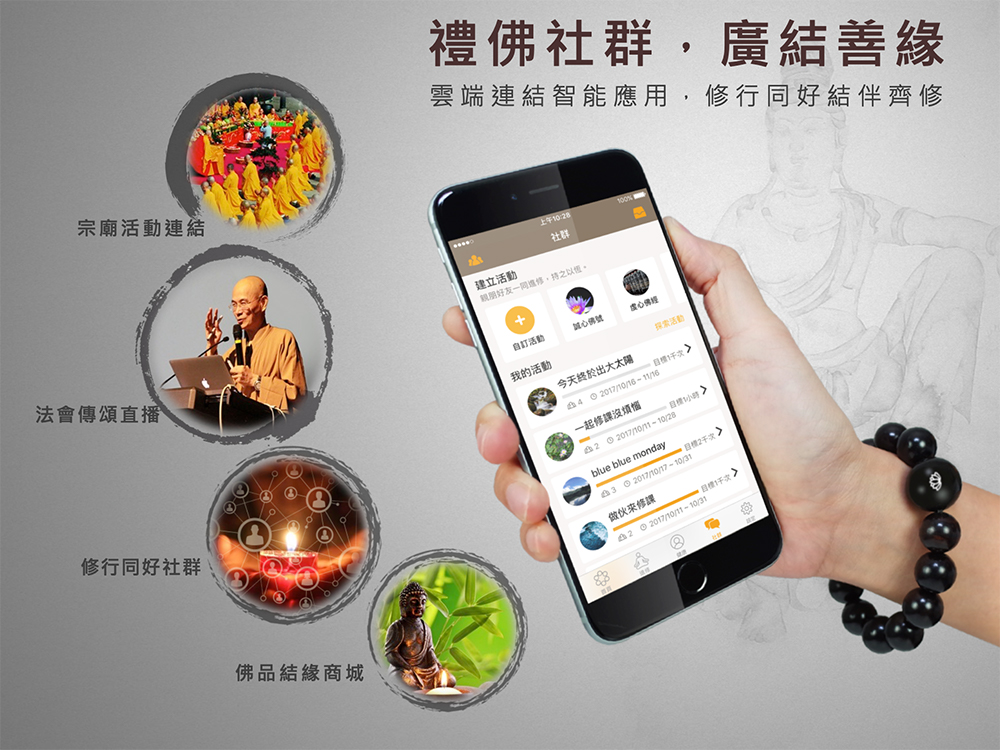硬體：著重在用戶配戴、握持串珠的舒適性及充電上的便利性
串珠：著重在用戶配戴體驗(如何佩戴/如何拿下)/數珠握持舒適度(串珠大小/材質)
無線旅充：著重充電體驗(放下/拿起)/充電燈號提醒
喇叭座充(缽)：著重在充電體驗/充電燈號提醒/音樂播放
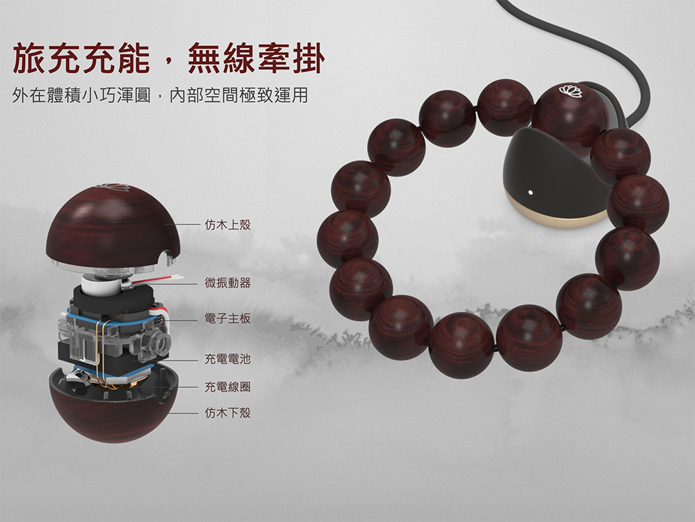 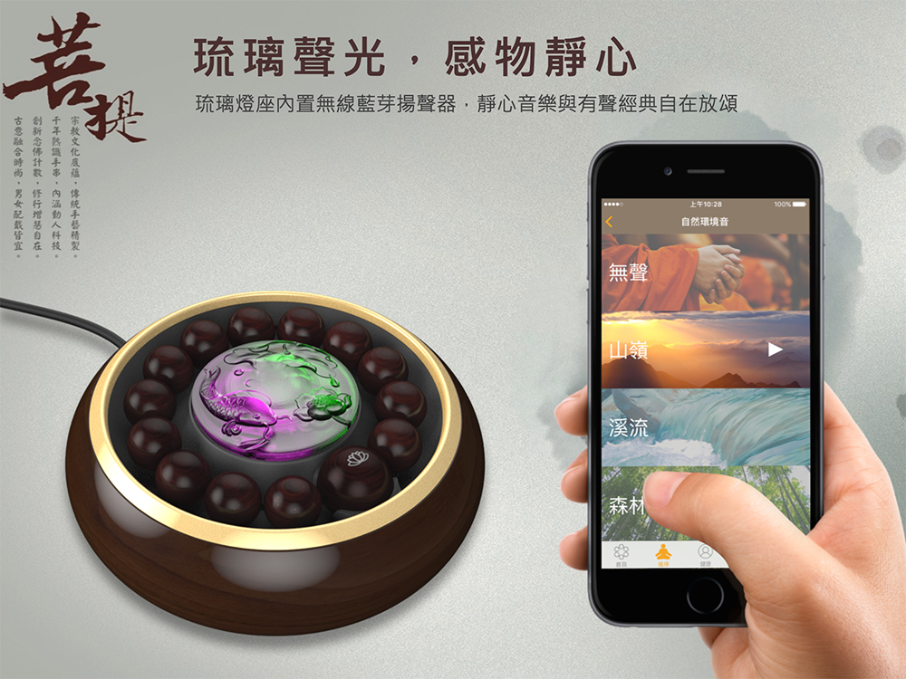專利取得：累計與共享撥珠資訊的方法
Process Point
Self-Review
專案時程緊湊需做主觀性決策
當在執行一個專案時，需考量到時程長短，去決定要做什麼樣的研究及結果輸出。也因為有這樣的限制在，我們可以將產品限縮在一個範圍內，以執行MVP為導向的產品發展。此時，有很多需要做取捨的功能，必須排列出優先順序，且必須在短時間內做決策。但優先順序的篩選礙於時間的關係，就會變成我們主觀認爲什麼是比較重要，來不及驗證就得先執行下去，但到底用戶最重視的是什麼？我們可能也沒有絕對的把握。
人因研究不夠徹底以致悲劇產生
上述有提到因為智能穿戴其實是軟硬體整合的產品，我們考量到了穿戴的舒適性，充電的便利性，但是我們卻缺少了大部分用戶手圍的大小，因此在設計喇叭充電器的時候，我們認為是一個很的產品，但卻沒想到當用戶手圍比較小時(尤其女性)，串珠也會跟著縮小，缽的脖子直徑太粗，導致串珠只有主珠放置在凹朝裡，子珠卻蓋住了整個缽。
若當初透過大數據將用戶手圍設定在一個範圍內，那缽的脖子直徑可能會在設計跟細緻一些，而不致於產生串珠無法安穩放置在缽裡的情況。
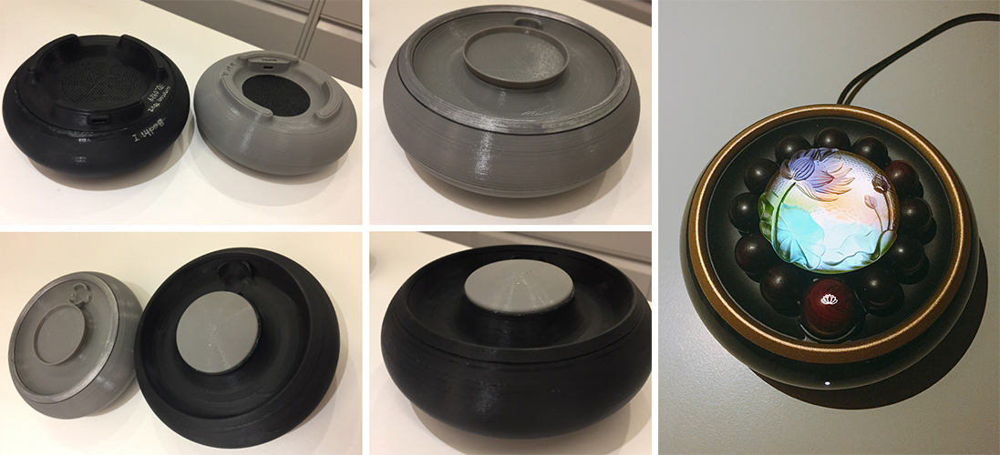